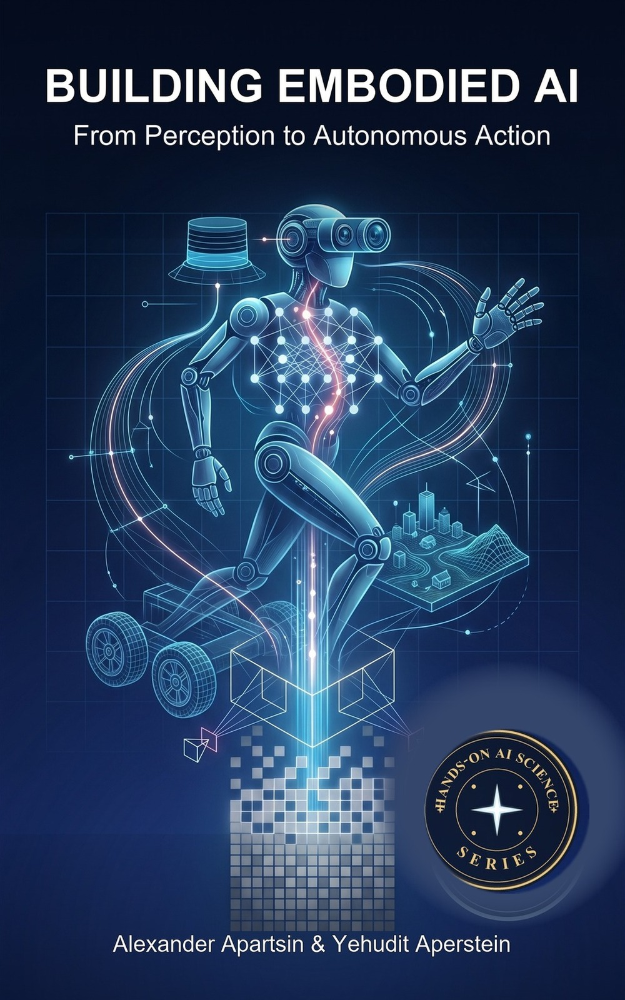
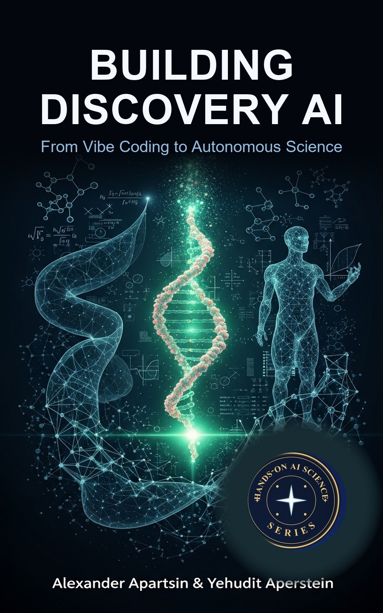
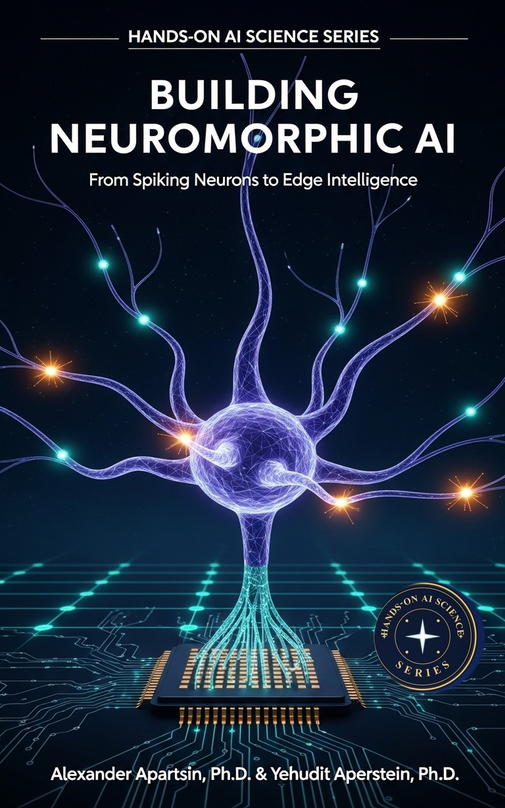
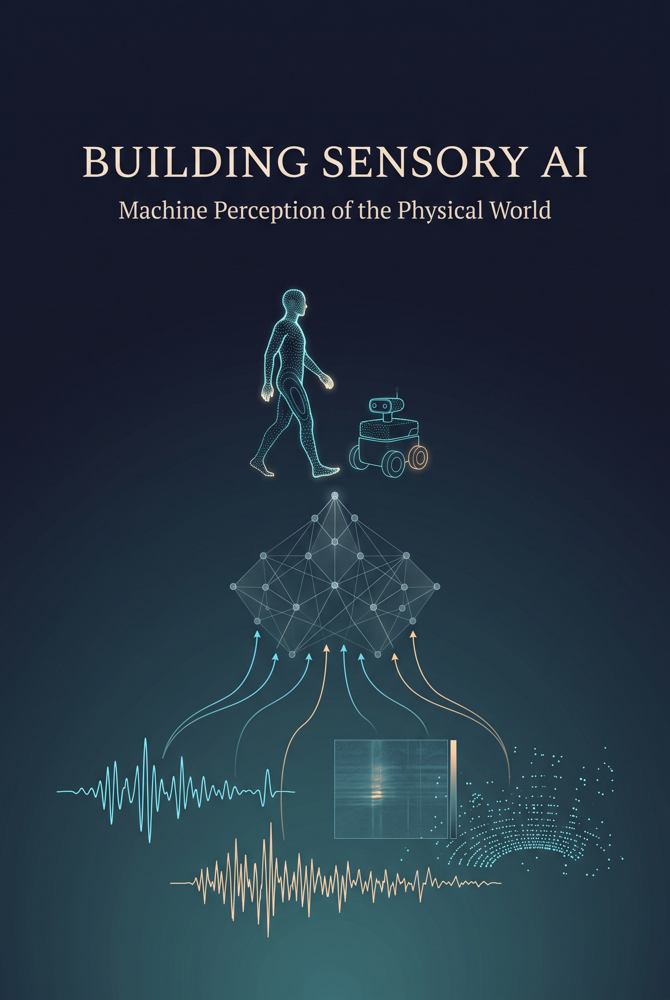

Online Textbook
Building Language AI: From Tokens to Agents
A practitioner's guide to large language models, retrieval-augmented generation, fine-tuning, and agentic systems.
These book manuscripts synthesize lessons from applied research, course design, and three decades of system building. Each draft is open and continuously updated. Shorter writing lives under blog posts.
Complete editions, available to read online and in print where noted.
Online Textbook
A practitioner's guide to large language models, retrieval-augmented generation, fine-tuning, and agentic systems.

Online Textbook
Computer vision end to end: classical image processing, convolutional networks, and modern generative models.

Online Textbook
A practitioner's guide to distributing data, training, inference, and coordination across many machines.

Online Textbook
Temporal AI end to end: time-series forecasting, sequence modeling, and sequential decision making.
Work in progress. These are being written and revised, so chapters may be incomplete or change.

Online TextbookDraft
A practitioner's guide to systems that act in the physical world, spanning simulation, reinforcement learning, learning from demonstration, perception, world models, manipulation and locomotion, and safe deployment.

Online TextbookDraft
AI systems that accelerate scientific research: vibe coding as engineering practice, scientific foundation models, literature mining and hypothesis generation, autonomous discovery pipelines, and self-driving laboratories.

Online TextbookDraft
A practitioner's guide to brain-inspired AI: spiking neural networks, neural coding, learning algorithms, neuromorphic hardware such as Loihi 2 and SpiNNaker, event-based sensors, and edge deployment.

Online TextbookDraft
The full sensing pipeline across inertial, vibration, radar, lidar, depth, thermal, event, RF, tactile, and biomedical sensors: signal processing, state estimation, deep learning, multimodal fusion, and edge deployment.